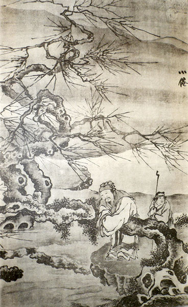

Красота
Что такое красота? — Сложный вопрос. Ограничимся таким определением: это катализатор любви. Понятие о красоте человека в Старом Китае в общем совпадает с этим понятием у людей белой расы, но оно чуть-чуть шире…
В ряду главных составляющих женской красоты — цвет её тела и одежды; затем фигура и формы тела, и, конечно, душевные качества.
Достаточно привести несколько примеров.
- «Ты величава собой, высока и стройна,
- Виден узорный наряд под одеждою из полотна.
- Пальцы — как стебли травы, что бела и нежна…
- Кожа — как жир затвердевший, белеет она!
- Шея — как тело червя-древоточца, длинна,
- Зубы твои — это в тыкве рядком семена.
- Лоб — от цикады, от бабочки — брови…Княжна!
- О, как улыбки твои хороши и тонки,
- Светят-сверкают в глазах твоих нежных зрачки». (4, стр.59)
- Виден узорный наряд под одеждою из полотна.
В новеллах XV века (эпоха Мин), женская красота изображалась в сравнениях более возвышенного характера, чем в Шицзин:
- в семье одного чиновника
- «родилась девочка красоты несравненной.
- Прелесть её можно уподобить цветущему персику,
- Который глядится в воду весенней порой,
- статью и грациозностью походит она на плывущее по небу облако,
- спешащее навстречу солнцу,
- Её десять пальчиков — полированный хрупкий нефрит,
- а волосы — завитки кудрявого шелка.
- Как стихи слагает! Как знает мелодии!
- Нет ей равной и во всякой женской работе,
- особенно в вышивании по шелку или парче». (5, стр.329)
- «родилась девочка красоты несравненной.
Некто Сун Юй, вельможа князя Чан Вана, был обвинен своим недоброжелателем в чрезмерном увлечении женщинами. Он оправдывается тем, что не обращает внимания на дочь соседа — писаную красавицу, в то время, как его недоброжелатель Дэнту не брезгует безобразной супругой. Возникает вопрос: кто же из них настоящий сладострастник?
«А дочь соседа моего вот какова: прибавить один только дюйм ей, так будет она уж слишком длинна; убавить ей дюймик один лишь, так будет она чересчур коротка. Белил на лицо положить ей, так будет излишне бела; румян ей придать, так будет излишне красива.
Брови у ней — что крылья зимородка; кожа у ней снег белый мне напоминает. Талия — вроде рулона чистейшего шелка; зубы у ней — словно держит во рту она раковинки. И стóит ей ласково так улыбнуться — с ума сведет весь город (как Янчэн), в неистовство введет другой (как, например, Сяцай).
И тем не менее вот эта девушка всё лезет на забор и на меня всё смотрит, государь. Так длится третий год, а до сих пор я всё не соглашаюсь.
А вот Дэнту, тот не таков. Жена его с лохматой головой, с кривулей вместо уха и боком как-то ходит, сутулая какая-то. Да ко всему тому парша у ней и геморрой. Дэнту ж обожает её и дал ей родить пятерых.
Вы хорошенько взвесьте, государь, который из нас двоих любитель женщин, сладострастник настоящий?» (2, стр.293)
Аналогичный случай воспел наш популярный бард. Он поёт о любимой женщине:
- «И глаз подбит, и ноги разные…
- Все говорят, что не красавица,
- А мне такие больше нравятся» (Вл. Высоцкий)
- Все говорят, что не красавица,
В китайской поэзии есть поразительные примеры эталонов красоты.
Нам этого, пожалуй, не понять: женщина упрекает мужчину за то, что он не похож на крысу.
- «Ты на крысу взгляни — щеголяет кожей,
- А в тебе нет ни вида, ни осанки пригожей.
- Почему не умрешь ты, на людей не похожий?
- Ты на крысу взгляни — у неё есть зубы,
- А ведь ты человек без удержу, грубый.
- Чего ждёшь, кроме смерти? Что тебе любо?
- Посмотри-ка: всё слажено в теле крысином.
- Ты — не знаешь обряда и не славен ты чином.
- Коль ни чина нет у тебя, ни обряда,
- Что же, ранняя смерть для тебя не награда?» (4, стр.55)
- А в тебе нет ни вида, ни осанки пригожей.
Хочу загладить неприятное впечатление от последнего стихотворения: приведу пример описания мужской красоты из ближневосточной поэзии середины I-го тысячелетия до н.э. Вы уже догадались откуда?
— Правильно, из Песни Песней.
- 10. Возлюбленный мой бел и румян,
- Лучше десяти тысяч других.
- 11. Голова его — чистое золото;
- Кудри его волнистые, черные,как ворон.
- 12. Глаза его — как голуби при потоках вод,
- Купающиеся в молоке, сидящие в довольстве;
- 13. Щеки его — цветник ароматный,
- Гряды благовонных растений; губы его — лилии,
- Источают текучую мирру;
- 14. Руки его — золотые кругляки, усаженные топазами;
- Живот его — как изваяние из слоновой кости,
- Обложенное сапфирами;
- 15. Голени его — мраморные столбы, поставленные на
- Золотых подножиях; вид его подобен Ливану,
- Величествен, как кедры.
- 16. Уста его — сладость, и весь он — любезность.
- Вот кто возлюбленный мой, и вот кто друг мой,
- Дщери Иерусалимские! (Песнь 5:10-16)
- Лучше десяти тысяч других.
В лирической поэзии XIX — XX веков таких обширных описаний внешности, пожалуй, не найдете. Современный поэт выражает свои чувства, а не объективную реальность, а для возбуждения чувства достаточно увидеть (и описать) какую-нибудь одну или две детали женского портрета: глаза, плечи, кудри…
Вот один из редких примеров относительно подробных портретов — из стихов М.Ю. Лермонтова о женщине родом с Украины:
- Прозрачны и сини
- Как небо тех стран, её глазки,
- Как ветер пустыни,
- И нежат, и жгут её ласки.
- И зреющей сливы
- Румянец на щечках пушистых,
- И солнца отливы
- Играют в кудрях золотистых…
- Как небо тех стран, её глазки,
Великий Аристотель однажды сказал: говорящий что-либо о природе подобен стреляющему из лука по открытым воротам. Он обязательно попадет в цель — непопадание исключено. Говорящий о цвете как эстетическом объекте окажется прав, что бы он ни утверждал.
Например, черный цвет — хорош он или плох? Черная невольница из сказок 1001 ночи убедительно доказывает, что цвет её кожи — красивее белого. Она говорит, обращаясь к белой подруге:
Разве не знаешь ты, что приведено в Коране…слово Аллаха великого: «Клянусь ночью, когда она покрывает, и днем, когда он заблистает!» И если бы ночь не была достойнее, Аллах не поклялся бы ею и не поставил бы её впереди дня, — с этим согласны проницательные и прозорливые.
Разве не знаешь ты, что чернота — украшение юности, а когда нисходит седина, уходят наслаждения и приближается время смерти?
Другие аргументы я не привожу, т.к. они занимают три печатные страницы.
В Старом Китае, как и во всём мире, черный цвет амбивалентен.
Это цвет ночной тоски и страха, душевного холода и неуюта. Всё «темное» — это жестокое, нечестное, лживое, неискреннее, тайно-порочное. Например, человек, обманом наживший богатство, называется «тёмная деньга» (5, стр.351). «Темное царство» — название преисподней (5,стр.371).
В то же время черный — это цвет одежды даосских монахов и монахинь — святых людей, праведников, без которых, как известно, мир не стоит.
Черный цвет присвоен космической эмблеме «змея, обвивающая черепаху» — знак единения полов для продолжения жизни на Земле.
Богатство и бедность
В Старом Китае материальное богатство отмечено многоцветием.
Обычно дорогая вещь окрашена в несколько хроматических красок; в её гаммы включаются также золото, серебро, драгоценные камни, жемчуг, перламутр и пр. Красавица Лю-Фу из песни «Туты на меже» одевается не хуже богини Гуаньминь:
- «На голове узлом прическа
- Так хороша!
- И серьги жемчугом сияют
- В её ушах.
- Оранжевым узорным шелком
- Расшит наряд
- Поверх лиловыми шелками
- Блестит халат»
- Так хороша!
Все любуются красавицей: ведь каждый, кто Лю-Фу увидит — навек пленен. (Между прочим, ей 15 лет и она замужем). (2, стр.308)
Богаче всех, конечно, император. Убранство его дворца поражает роскошью. Опальная супруга императора в поэме Сымы Сянжу «Там, где длинны ворота» покинута мужем за чрезмерную ревность. В тоске и одиночестве бродит она по дворцу. В сумерках дворцовые здания подавляют её своей высотой и мрачностью, но когда она входит в залы, то красота интерьеров заставляет её забыть своё горе. Душа не в силах оторваться от созерцания всего этого великолепия.
«Двери — в инкрустациях, перекладины двери из скульптурной магнолии, карниз отделан ажурным абрикосом; капители колонн из редких деревьев… «А днем все пять цветов слепят, один перед другим — слепят, и огненно сверкают — сплошное яркое сиянье! И плотно так скрестились камни, нет, — это черепицы крыш…напоминает их узор игру каких-то самоцветов. Везде растянуты там занавесы, да; свисают вниз перевитыми узлами густой бахромы…» (2, стр.297)
Наглядное представление о богатстве царской наложницы Хэдэ даёт список её подарков сестре — императрице: его можно было бы назвать «Самое лучшее из мира вещей».
«Циновка, стеганная золотыми блёстками. Чаша ароматного дерева алоэ в виде завязи лотоса. Большой пятицветный узел — воплощение полного единения. Штука золотой парчи с рисунком уточек-неразлучниц. Ширма хрустальная. Жемчужина к изголовью государыни, светящая в ночи. Покрывало для жертвенных приношений из шерсти дикой кошки, пропитанное ароматами. Темно-красное платье дань из прозрачного шелка сяо. Ящичек лазоревой яшмы для притираний…», и т.д. (2, стр.358)
Богатство тешит чувства и доставляет радость, но не спасает от несчастья. Дарительница всех этих предметов роскоши не избежала злой судьбы — гибели в расцвете лет. Самые достойные люди Китая осуждают накопление богатств. Великий мудрец Лао-цзы учит:
«[Люди] должны быть простыми и скромными, уменьшать личные желания и освобождаться от страстей» (Дао дэ Цзин, § 19)
«Если дворец роскошен, то поля покрыты сорняками и хлебохранилища совершенно пусты. Знать одевается в роскошные ткани, носит острые мечи, не удовлетворяется обычной пищей и накапливает излишние богатства. Всё это называется разбоем и бахвальством. Оно является нарушением Дао (§53).
Совершенномудрый не желает блестеть (§58).
Кто чем-либо владеет — потеряет (§64).
Совершенномудрый ничего не накапливает (§81).
Лао-цзы осуждает также роскошь и богатство в цвете.
"Пять цветов притупляют зрение" (§12).
Наставлениям древних мудрецов по-настоящему следовали только даосские монахи и мастера монохромной живописи.
Художник Шэнь Фу, живший в конце XVIII века, сетует на плохой (с его точки зрения) вкус своих современников, забывших благородные заветы древних: «Издавна мои земляки отличались тягой к пышному великолепию, и по сей день они ещё гонятся за вычурностью и состязаются в роскоши, правда, в сравнении с прошлым стали гораздо расточительнее… Древние именовали это «расписными стропилами и резными кровлями», «жемчужными занавесями и расшитыми пологами», «яшмовыми перилами» и «занавесями из парчи» (3, стр.215).
Тао Цинь (IV — V вв.):
- «Бывает — как будто красавица-дева,
- Бывает — как будто красавец-юнак.
- Не то чтоб нельзя было ими плениться…
- Но фыркнет на это великий эстет.
- Красивые созданья — это сусальная мелюзга. Великому эстету
- Нужно великое, а не сусально-эфемерное!» (1, стр.211)
- Бывает — как будто красавец-юнак.
Согласно всеобщему закону диалектики — там, где есть богатство, есть и бедность. Как сказал русский писатель Андрей Платонов: «Мир диалектичен — сиречь на каждого героя есть своя стерва».
Бедный китаец — это благороднейший человек: труженик, праведник, бессребреник. И хотя одет он в сермягу и рогожу — он духовно выше нарядных господ. Лю И-цин рассказывает:
«Гуань Нин и Хуа Синь как-то вместе пололи в огороде овощи и наткнулись на золотую пластину. Гуань продолжал мотыжить, словно это была черепица или булыжник. Хуа подобрал пластину с земли и отшвырнул в сторону.
В другой раз сидели они рядом на циновках и читали, когда мимо дома проехал какой-то сановник. Нин продолжал читать, как ни в чем не бывало, а Синь оторвался от книги и пошел взглянуть на выезд.
Нин отодвинул в сторону свою циновку, сел от него поодаль и сказал:
— Вы мне больше не друг». (3, стр.51)
Впечатляет?
Вот «мода» простолюдина: «Старая рваная шляпа на прорванной подкладке ценой в семь грошей, к подшляпнику потрепанным шнурком привязаны колечки, вырезанные из тыквы-горлянки, поношенная рубашка подпоясана бумажным кушаком ценой в пять грошей, башмаки подвязаны веревками, а лицо он прикрыл ломаным веером, от которого осталось всего три пера. В мешочке от старого носка лежала прожженная трубка». Так нарядился помощник государя Ли, собираясь в путь, чтобы послушать, о чем говорит народ. (2, стр.354).

Отрешенность
Что делать человеку, если он не может, не желает примириться со злом, царящим в мире людей? Он уходит — в лес, в пустыню, в монастырь, в горы…Там он находит покой для души, там нет препятствий для общения с Атманом, Индрой, Буддой, Дао…
Старый Китай знаменит своими отшельниками, удалившимися от мира подобно Чжуан-цзы, который отказался от службы при царском дворе и предпочел, как черепаха, «волочить хвост по грязи».
Это иносказательное выражение, впрочем, означало жизнь, полную размышлений и творчества, то есть, в сущности, счастливую жизнь.
Примеру Чжуан-цзы следовали многие ученые и художники Старого Китая. У них сложилась своеобразная культура быта и система ценностей, эстетика любования природой и довольства её небогатыми дарами. Достойны удивления и преклонения скромность быта и величие духа в Старом Китае.
Поэт Юань Мин (IV в. н.э.) в своём эссе «Жизнь Ученого Пяти Ив» рассказывает о своём ученом друге: «Он был беспечен и спокойно величав. Он мало говорил. Он не стремился к славе и наживе. …Забор его жилья был жалок и убог, не закрывал его от ветра и от солнца. Одет он был в короткую рубаху в заплатах и узлах. В корзинке, в тыквине бывало пустовато, но он был равнодушен и не тужил…» (13, стр.80)
А вот свидетельство поэта Бо Цзюй-и о жизни Тао Юань Мина:
- «И в семье твоей бедной никогда не хватало еды,
- И на теле носил ты весь в заплатах потертый халат.
- Ко двору приглашали, но и там ты служить не хотел.
- Вот кого мы по праву настоящим зовем мудрецом!» (8,стр.30)
- И на теле носил ты весь в заплатах потертый халат.
Серый цвет считается цветом бедности, скуки, посредственности.
Но, подобно тому, как бедность — спутница мудрости, так серый цвет может быть желанным спутником интеллектуала.
Михаил Гаспаров шел однажды по улице и наслаждался колоритом окружающей среды: «Я шел по Арбатской площади — ровное-ровное серое небо, черная без снега земля, промытый прозрачный воздух, всё ясно и отчетливо, — и показалось, что вот она, моя погода, мы с нею созданы друг для друга и ждали этой встречи всю жизнь, и как жалко, что это счастье мимолетнее всякого другого.
На обратном пути небо уже расслоилось волокнами, и всё разрушилось. (19, стр.280)
Китайская пейзажная живопись производит глубокое впечатление даже на нас, огрубевших сердцем. В тысячу раз более сильно и глубоко переживали поэты Старого Китая пейзаж своей страны. За полторы тысячи лет — от II до XVII столетия китайские поэты создали прекрасные стихи о горах и водах, деревьях, цветах и птицах, о закатах и рассветах, снегах и ветрах. Этот особенный стихотворный жанр получил название «Пейзажная лирика».
Поэты-отшельники находили в природе спасение от мирской суеты, несправедливости власть имущих, засилья конфуцианской бюрократии. В горах они находили средоточие Сокровенного — Небытие, Пустоту, безмолвие. «Именно здесь была обитель Великого Дао — Пути Вселенной, источника всего сущего… Мудрец следует Небу, отдается на волю естества, не связывает себя суетой, не поддаётся людским соблазнам. Небо ему отец, земля ему мать,сила Инь-Ян — основа, четыре времени года — уток». (10, стр.160)
Сама природа Китая предоставляла беглецам от мира сего убежище, достойное высокого духа. Поднимаясь в горы, отшельник вместе с тем поднимался над миром человеческого зла; мудрец, становясь частицей Природы, «мог парить в облачном эфире и, оседлав солнце и луну, лететь за четыре моря» (по словам Чжуан-цзы).
Колорит пейзажной лирики непросто определить в нескольких словах. Видимо, в основном — это колорит отчуждения от дольнего мира, это нечто туманное и неясное, как само Дао. Ветер, вода, облака, снежные вершины гор — всё это белое или бесцветное, способное окрашиваться в цвета солнечного или лунного света — розовый, пурпурный, голубоватый…Но колорит настроения, которым проникнуты поэтические строчки — не всегда радостный. Отшельник немало тоскует от одиночества, ностальгирует по родным местам, терпит холод и прочий бытовой дискомфорт.
- «Для чего я внимаю напеву о дальнем пути?
- Только лютня замолкнет, и сразу приходит тоска». (7, стр.42)
Отшельник — это не только обитатель хижины в горах. Он может жить и в городе или деревне, если умеет умчаться душой в заоблачные дали.
- «Я поставил свой дом в самой гуще людских жилищ,
- Но минует его стук повозок и топот коней.
- Вы хотите узнать, отчего это может быть?
- Вдаль умчишься душой, и земля отойдет сама.
- Хризантему сорвал под восточной оградой в саду,
- И мой взор в вышине встретил склоны Южной горы.
- Очертанья горы так прекрасны в закатный час,
- Когда птицы над ней чередою летят домой!
- В этом всём для меня заключен настоящий смысл.
- Я хочу рассказать, и уже я забыл слова…» (Тао Юань Мин)
- Но минует его стук повозок и топот коней.
Приступая к работе над данным текстом, я была под сильным обаянием живописи и литературы Старого Китая. Хотелось понять, в чем очарование и своеобразие этой культуры.
Но чем больше я углублялась в тему, тем чаще всплывали в моей памяти фрагменты поэзии других народов, других культур, и особенно часто — перлы русской поэзии.
Я искала различия в поэтике и колористике Востока и Запада, а нашла параллели и сходство. Ведь «русский с китайцем — братья вовек». Все мы дети Адама и Евы, а мир един по Природе.
Л. Миронова,
20.02.2012
Список литературы
- Алексеев В.М. Китайская литература. — М., Наука, ГРВЛ, 1978
- Поэзия и проза Древнего Востока. — М., Худож. литература, 1973
- Классическая проза Дальнего Востока. — М., Худож. литература 1975
- Шицзин. Книга песен и гимнов. — М.,Худож. литература, 1987
- Рассказы у светильника. Китайская новелла XI — XVI веков. — М., Наука, ГРВЛ, 1988
- Пу Сунлин. Рассказы Ляо Чжая о необычайном. — М., Худож. литература, 1988
- Китайская пейзажная лирика III — XIV вв. — М., Изд-во МГУ, 1984
- Классическая поэзия Индии, Китая, Кореи, Вьетнама, Японии. — М., Художественная литература, 1977
- Древнекитайская философия, т.1. — М., «Мысль», 1972
- Хуайнань Цзы Учителя из Южного Заречья. В кн.: Дао дэ Цзин. Книга Пути и Благодати. — М., «Эксмо», 2008
- Завадская Е.В. Эстетические проблемы живописи Старого Китая. — М., «Искусство», 1975
- Завадская Е.В. «Беседы о живописи» Ши-тао. — М., Наука, 1978
- Малявин В.В. Жуань цзи. — М., Наука, ГРВЛ, 1978
- Бежин Л.Е. Под знаком «Ветра и Потока». — М., Наука, 1982
- Жемчужины китайской живописи. Альбом репродукций в 3-х томах. Шанхай, 1955
- Сычёв Л.П., Сычёв В.Л. Китайский костюм. — М., Наука, 1975
- И-Цзин. Древнекитайская «Книга Перемен» — М., ЭКСМО, 2008
- Юань Кэ. Мифы Древнего Китая. — М., ГРВЛ, 1987
- Гаспаров М. Записи и выписки. — М., Новое лит.обозрение, 2001